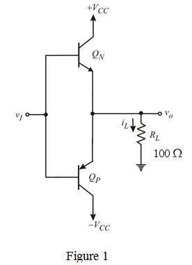

The condition for the maximum average power available from a class B output stage is,

Calculate the average load power,  .
.
Substitute  for
for  and
and  for
for .
.
Therefore, the maximum average power available is .
Consider the output stage of class B is shown in Figure 1.

The condition for the maximum average power available from a class B output stage is,
Calculate the average load power, .
Substitute for and for.
Therefore, the maximum average power available is .
Calculate the average power drawn from each power supply.
Substitute  for
for  ,
,  for
for  and
and  for
for  in .
in .
Therefore, the maximum average power drawn from each power supply is
.
Calculate the total supply power  .
.
Substitute  for
for ,
,  for
for  and
and  for
for  in
in  .
.
Therefore, the total supply power  is .
is .
Calculate the power conversion efficiency of an output stage.
Substitute for  and for in .
and for in .
Therefore, the power conversion efficiency is .
is .
 .
.
Calculate the average load power , .
Substitute  for
for  and
and  for
for  in
in .
.
Therefore, the maximum average poweravailable is .
Calculate the average power drawn from the each power supply:
Substitute  for,
for,  for
for and
and for
for in.
in.
Therefore, the maximum average power drawn from the each power supply is
.
Calculate the total supply power .
.
Substitute  for
for ,
,  for
for and
and for
for in
in .
.
Therefore, the total supply power is
is  .
.
Calculate the power conversion efficiency of an output stage:
Substitute forandfor in
in  .
.

Therefore, the power conversion efficiency is  .
.